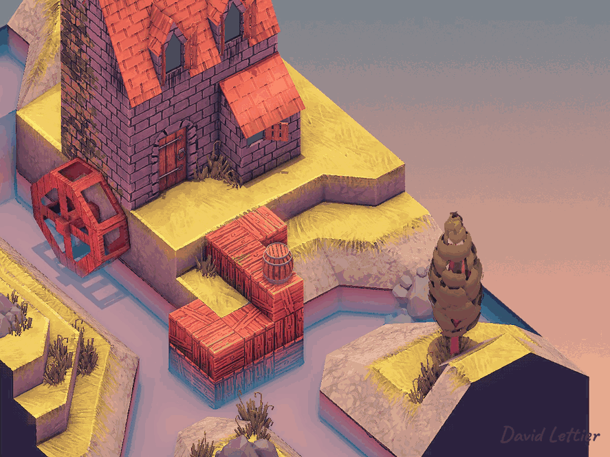
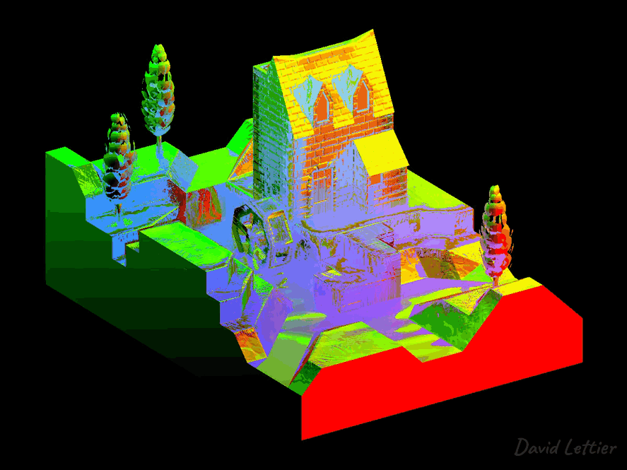
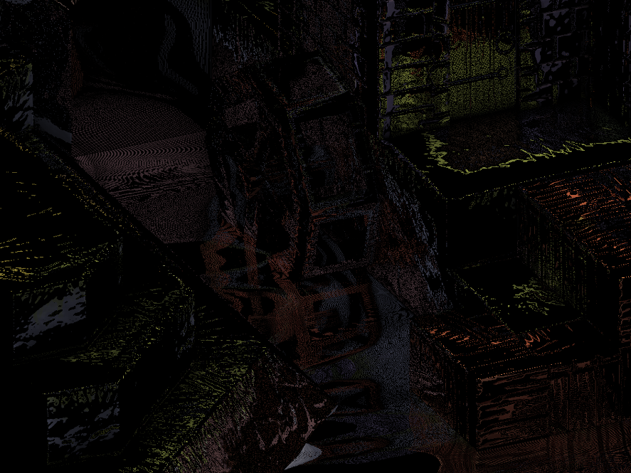
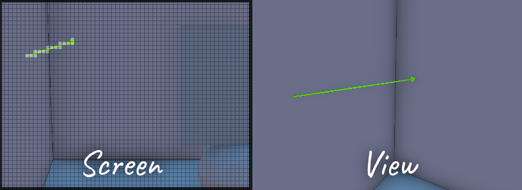
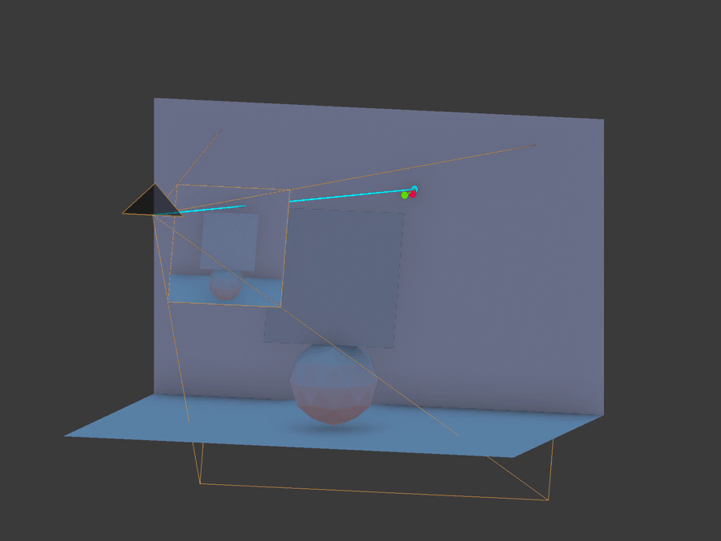
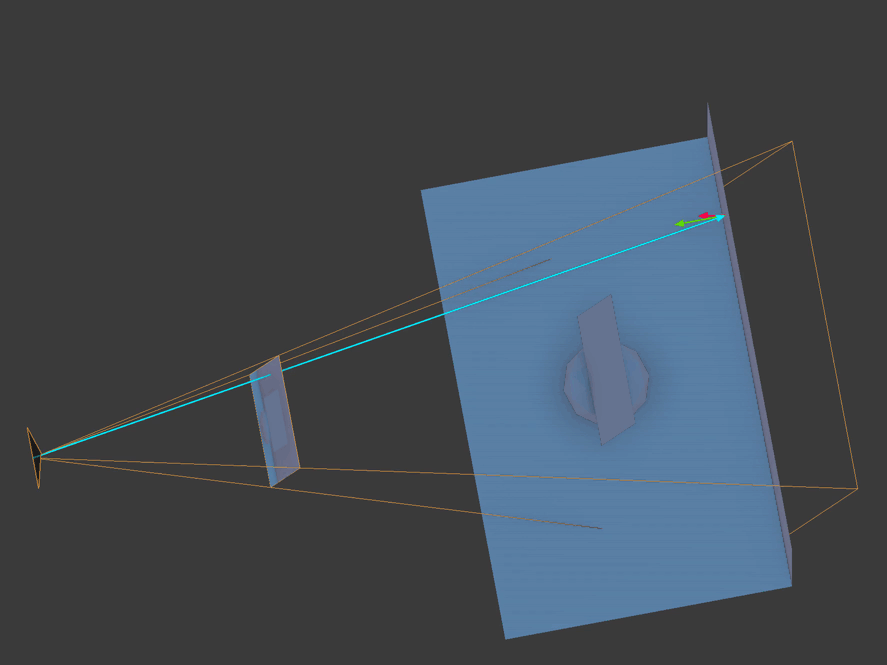
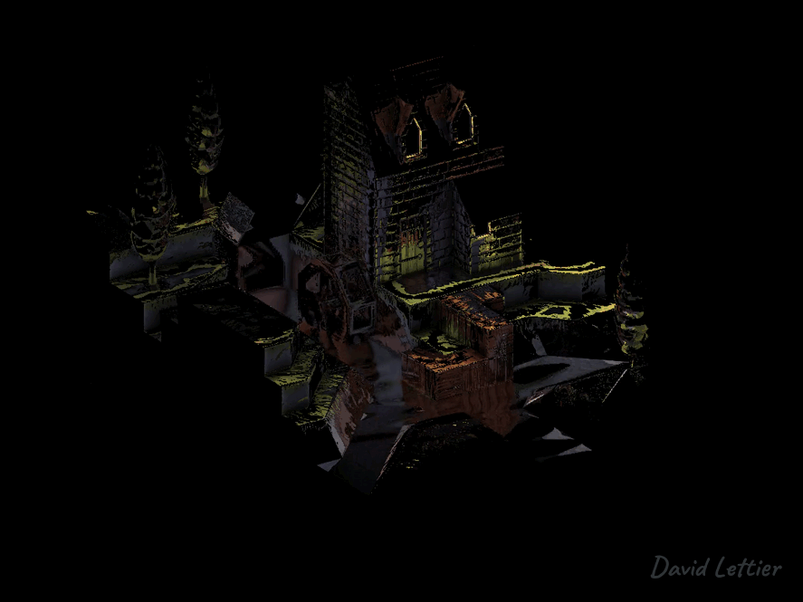

添加反射可以让你的场景更具真实感。
湿润和有光泽的物体会变得生动起来，没有什么比反射更能让物体看起来湿润或闪亮了。
借助反射，你可以更好地营造出水面和金属物体的幻觉。
在光照部分，你模拟了光源的镜面反射图像。
这是渲染镜面反射的过程。
还记得我们是用反射光方向来计算镜面光的。
类似地，使用屏幕空间反射（SSR）你可以模拟场景中其他物体的反射，而不仅仅是光源。
这不再是从光源发出的光线反射进入摄像机，而是场景中某个物体发出的光线反射进入摄像机。
SSR 的工作原理是使用屏幕图像自身来对自身进行反射。
这与使用六面贴图（立方体贴图）不同，后者使用六个视角的纹理。
在立方体贴图中，你从场景中某点发出一条射线，并反射到包围整个场景的立方体内部的某一点。
而在 SSR
中，你从屏幕上的一个点发出射线，并反射到屏幕上的另一个点。
通过将屏幕反射到自己上面，你可以制造出反射的幻觉。
这种幻觉在大多数情况下是有效的，但如你将看到的，它也有失效的时候。
屏幕空间反射使用一种称为“光线步进”的技术来为每个片元确定反射。
光线步进是一种迭代延展或缩短某个向量的长度（或大小）来在空间中探测或采样信息的方法。
在屏幕空间反射中，反射光线是相对于法线方向反射后的位置向量。
直观上讲，一条光线打到场景中的某个点，
发生反射，
然后沿反射向量的相反方向传播，
打到当前片元，
再沿位置向量的相反方向传播，
最终击中摄像机镜头，从而让你在当前片元中看到场景中某点的反射颜色。
SSR 就是在反向追踪这条光线路径。
它试图找出光线反射并击中当前片元的那个反射点。
每次迭代时，
算法会沿着反射光线采样场景的位置或深度，
每次判断光线是否与场景几何体相交。
如果有相交，
那么这个位置就是当前片元可能反射的候选点。
理想情况下，应该有某种解析方法可以精确求出第一次相交的点。
因为这个第一次相交点才是当前片元应该反射的唯一有效点。
但实际上，这个方法更像是一场“战舰游戏”。
你看不到是否有相交点，因此只能从反射光线的起点开始，沿着方向一个一个坐标“喊出来”。
每喊一个，就看看是否“击中”。
如果击中，
你就围绕那个区域再尝试，希望找出准确的相交点。
这里展示了如何使用光线步进来计算每个片元的反射点。
绿色亮箭头表示顶点法线，
蓝色亮箭头是位置向量，
红色亮箭头是通过视空间进行步进的反射射线。
与 SSAO 一样，你需要将顶点位置转换到视空间中。
参见 SSAO 章节获取更多细节。
为了计算反射，你也需要将顶点法线转换到视空间中。
参见 SSAO 章节获取更多细节。

这里展示的是使用法线贴图中的法线进行 SSR，
而不是使用顶点法线。
注意反射如何随着水面波纹而变化，
而不是之前所展示的那种镜面反射效果。
要使用法线贴图，
你需要像在光照计算中那样将法线从切线空间变换到视空间。
可以在 normal.frag
中看到这个过程。

与 SSAO 一样，SSR
也需要在屏幕空间和视空间之间来回转换。
你需要相机镜头的投影矩阵来将视空间中的点变换到裁剪空间（clip
space）。
再从裁剪空间转换到 UV 空间。
在 UV 空间中，
你可以从场景中采样顶点或片元位置，
这些位置就是你采样点在场景中最接近的位置。
这就是“屏幕空间反射”中的“屏幕空间”部分，
因为“屏幕”本质上是一张映射到屏幕大小矩形上的 UV 纹理。
你可以用几种不同的方式来实现 SSR。
示例代码是从计算每个屏幕片元的反射 UV 坐标开始反射过程的。
你也可以跳过这一步，直接计算反射颜色，使用的是场景最终渲染的结果。
回忆一下，UV 坐标的 U 和 V 值范围都是从 0 到 1。
屏幕本质上是一张映射到屏幕大小矩形上的 2D 纹理。
知道这一点后，示例代码实际上不需要场景的最终渲染图像来计算反射。
它可以直接计算每个屏幕像素最终要使用的 UV 坐标。
这些计算出的 UV 坐标可以保存到帧缓冲纹理中，
在渲染完成后再使用。

上图显示的是反射后的 UV 坐标。
即使场景还没渲染出来，
你也可以预先感受到反射大致会是什么样子。
//...
uniform mat4 lensProjection;
uniform sampler2D positionTexture;
uniform sampler2D normalTexture;
//...你需要相机镜头的投影矩阵，以及视空间中插值得到的顶点位置和法线。
// ...
float maxDistance = 15;
float resolution = 0.3;
int steps = 10;
float thickness = 0.5;
// ...与其他特效一样，SSR 有一些可以调节的参数。
根据场景的复杂度，找到合适设置可能需要一些时间。
当你要反射复杂几何体时，让 SSR 看起来“正确”会特别困难。
maxDistance 控制片元最多可以反射多远，
换句话说，它决定了反射射线的最大长度或大小。
resolution
控制反射射线第一次遍历时跳过多少片元。
这第一次遍历用于找到射线进入或穿过某个几何体的粗略位置。
可以认为它是“粗步”。
注意，resolution 的范围是 0 到 1。
值为 0 会导致没有反射，而值为 1 会逐片元检查沿射线方向的所有点。
在大 maxDistance 值下，使用 1 的 resolution
会显著降低帧率。
steps 控制第二次遍历中进行的迭代次数。
这一次是为了找到射线与几何体精确相交的位置。
可认为它是“精步”。
thickness 决定哪些相交点算作命中，哪些不算。
理想情况下，射线应该精确停在某个场景中的片元或深度位置上。
那将是光线发生反射、打到当前片元、再进入相机的那个点。
可惜计算不是总能精确命中，所以 thickness
给了我们一定的容差。
你希望这个值尽可能小，只比采样位置或深度稍微大一点。

你会发现 thickness 越大，反射越模糊、越容易“糊掉”。

相反地，如果 thickness 越小，
反射会变得充满噪点，出现许多小洞和细缝。
// ...
vec2 texSize = textureSize(positionTexture, 0).xy;
vec2 texCoord = gl_FragCoord.xy / texSize;
vec4 positionFrom = texture(positionTexture, texCoord);
vec3 unitPositionFrom = normalize(positionFrom.xyz);
vec3 normal = normalize(texture(normalTexture, texCoord).xyz);
vec3 pivot = normalize(reflect(unitPositionFrom, normal));
// ...获取当前片元的位置、法线以及关于法线的反射向量。
positionFrom 是从摄像机到当前片元的向量。
normal 是当前片元插值得到的法线方向。
pivot 是将 positionFrom
相对于法线反射后得到的反射向量，
其长度为 1。
// ...
vec4 startView = vec4(positionFrom.xyz + (pivot * 0), 1);
vec4 endView = vec4(positionFrom.xyz + (pivot * maxDistance), 1);
// ...计算视空间中反射射线的起点和终点。
// ...
vec4 startFrag = startView;
// 投影到屏幕空间
startFrag = lensProjection * startFrag;
// 透视除法
startFrag.xyz /= startFrag.w;
// 屏幕空间 XY 转换为 UV 坐标
startFrag.xy = startFrag.xy * 0.5 + 0.5;
// UV 转换为片元坐标
startFrag.xy *= texSize;
vec4 endFrag = endView;
endFrag = lensProjection * endFrag;
endFrag.xyz /= endFrag.w;
endFrag.xy = endFrag.xy * 0.5 + 0.5;
endFrag.xy *= texSize;
// ...将起点和终点从视空间投影到屏幕空间。
这两个点现在对应于屏幕上的片元像素位置。
你可以在屏幕空间中沿着这条射线方向遍历。
可以将这条射线想象成屏幕上的一条线，
你将在这条线上进行步进，并在位置帧缓冲纹理中采样对应的片元位置。

注意你可以在视空间中进行步进，
但这样可能会对位置纹理进行欠采样或过采样。
要记住位置帧缓冲纹理的尺寸和形状就是屏幕本身。
每个屏幕像素对应摄像机拍摄到的某个位置。
反射射线在视空间中可能走得很远，
但在屏幕空间中可能只覆盖少量像素。
你只能对屏幕像素进行采样，
因此在视空间中步进可能会多次采样同一个像素，效率很低。
而在屏幕空间中步进会更高效地采样真正覆盖到的像素。
// ...
vec2 frag = startFrag.xy;
uv.xy = frag / texSize;
// ...第一步从反射射线的起点片元位置开始。
将片元坐标除以位置纹理的尺寸，转换为 UV 坐标。
// ...
float deltaX = endFrag.x - startFrag.x;
float deltaY = endFrag.y - startFrag.y;
// ...计算终点和起点之间的 X、Y 坐标差值（delta）。
这代表射线在屏幕空间中 X 和 Y 方向上占了多少像素。

// ...
float useX = abs(deltaX) >= abs(deltaY) ? 1 : 0;
float delta = mix(abs(deltaY), abs(deltaX), useX) * clamp(resolution, 0, 1);
// ...为了适配各种方向（垂直、水平、斜线等），
你需要判断哪个方向的差值更大。
较大的那个差值决定：
useX 是 0 或 1，
用来选择 X 轴还是 Y 轴。
delta 是两个差值中较大的一个，
用于控制每次步进时的增量和总步数。
// ...
vec2 increment = vec2(deltaX, deltaY) / max(delta, 0.001);
// ...根据较大的 delta 值计算每次 X 和 Y 上的增量。
如果两个 delta 一样大，则每次都加 1。
否则，大的那一维加 1，小的那一维加 <1。
假设 resolution = 1，
当 resolution < 1 时，算法就会跳过某些像素。
startFrag = ( 1, 4)
endFrag = (10, 14)
deltaX = (10 - 1) = 9
deltaY = (14 - 4) = 10
resolution = 0.5
delta = 10 * 0.5 = 5
increment = (deltaX, deltaY) / delta
= ( 9, 10) / 5
= ( 9 / 5, 2)例如，resolution 为 0.5 时，
较大的维度每步进 2 像素而不是 1。
// ...
float search0 = 0;
float search1 = 0;
// ...为了从起始片元移动到结束片元，算法使用线性插值：
current position x = (start x) * (1 - search1) + (end x) * search1;
current position y = (start y) * (1 - search1) + (end y) * search1;search1 的取值范围是 0 到 1。
search1 为 0 时，当前坐标等于起始片元；search1 为 1 时，当前坐标等于结束片元；search1
为其他值时，当前坐标在起始和结束片元之间。search0
用来记录上一次光线没有命中场景几何体的位置。
第二遍遍历时，算法会使用 search0
来帮助细化射线首次接触场景的位置。
// ...
int hit0 = 0;
int hit1 = 0;
// ...hit0 表示第一次遍历期间发生了碰撞；hit1 表示第二次遍历期间发生了碰撞。 // ...
float viewDistance = startView.y;
float depth = thickness;
// ...viewDistance 是当前光线点离摄像机的距离。
在 Panda3D 中，视空间的 Y 轴表示从屏幕外向内；
在其他系统中，通常是 Z 轴。
不管哪种方式，viewDistance
表示光线在当前点离摄像机的远近程度。
注意不要将 viewDistance 与屏幕上的 Y 轴混淆。
viewDistance 表示的是视空间中的深度；
而 Y 轴是在屏幕平面上上下移动。
depth
是当前光线点的视距离与场景采样位置视距离之间的差值，
用于判断该点是位于场景前方还是后方。
// ...
for (i = 0; i < int(delta); ++i) {
// ...现在可以开始第一次遍历了。
第一次遍历在 i < delta 时持续。
当 i == delta 时，算法已经走完了整条反射线。
// ...
frag += increment;
uv.xy = frag / texSize;
positionTo = texture(positionTexture, uv.xy);
// ...将当前片元位置推进，靠近终点片元。
使用这个新位置在位置贴图中采样场景的位置。
// ...
search1 =
mix
( (frag.y - startFrag.y) / deltaY
, (frag.x - startFrag.x) / deltaX
, useX
);
// ...计算当前片元所占的线段百分比。
如果 useX == 0，使用 Y 方向；否则使用 X 方向。
frag == startFrag，search1 == 0；frag == endFrag，search1 == 1； // ...
viewDistance = (startView.y * endView.y) / mix(endView.y, startView.y, search1);
// ...使用 search1 来插值当前点在视空间中的距离。
// 错误方式
viewDistance = mix(startView.y, endView.y, search1);
// 正确方式
viewDistance = (startView.y * endView.y) / mix(endView.y, startView.y, search1);尽管你可能会尝试直接用 mix
插值视距离，但这会导致误差。
应使用透视修正插值（perspective-correct interpolation）。
参考：Perspective-Correct Interpolation
// ...
depth = viewDistance - positionTo.y;
// ...计算光线当前点的视距与场景采样位置的视距之间的差值。
// ...
if (depth > 0 && depth < thickness) {
hit0 = 1;
break;
} else {
search0 = search1;
}
// ...如果差值在 0 和 thickness 之间，说明碰撞发生了。
设置 hit0 = 1，并跳出第一次遍历。
否则记录当前 search1 为
search0，继续步进。
// ...
search1 = search0 + ((search1 - search0) / 2);
// ...第一次遍历结束后，将 search1 设为最后一次 miss 与 hit
之间的中点。
// ...
steps *= hit0;
for (i = 0; i < steps; ++i) {
// ...开始第二次遍历。如果第一次遍历没有碰撞（hit0 == 0），跳过这一步。
// ...
frag = mix(startFrag.xy, endFrag.xy, search1);
uv.xy = frag / texSize;
positionTo = texture(positionTexture, uv.xy);
// ...像第一次遍历那样，采样当前射线位置对应的场景坐标。
// ...
viewDistance = (startView.y * endView.y) / mix(endView.y, startView.y, search1);
depth = viewDistance - positionTo.y;
// ...计算当前点的视距，并与场景视距做差。
// ...
if (depth > 0 && depth < thickness) {
hit1 = 1;
search1 = search0 + ((search1 - search0) / 2);
} else {
float temp = search1;
search1 = search1 + ((search1 - search0) / 2);
search0 = temp;
}
// ...若深度差值在合法范围内，说明命中；设置 hit1 = 1，
更新 search1 为 miss 和当前 hit 的中点。
如果没有命中，更新 search0 和
search1，继续二分。
// ...
float visibility =
hit1
// ...第二次遍历结束，准备计算最终反射的可见性（visibility）。
visibility 的取值范围是 0 到 1；
若未命中，值为 0。
// ...
* positionTo.w
// ...如果采样点的 alpha 分量为 0（即
w == 0），则说明没有场景信息。
此时 visibility == 0。

// ...
* ( 1
- max
( dot(-unitPositionFrom, pivot)
, 0
)
)
// ...当反射向量朝向摄像机时，可能会出现 SSR 错误。
为了解决这一问题，使用 dot 值对反射做渐变衰减。
visibility = 1visibility = 0 // ...
* ( 1
- clamp
( depth / thickness
, 0
, 1
)
)
// ...如果你没能准确找到交点，可以根据差值与 thickness
的比值进行模糊衰减。
// ...
* ( 1
- clamp
( length(positionTo - positionFrom)
/ maxDistance
, 0
, 1
)
)
// ...根据反射点与起点之间的距离进行进一步衰减，
避免反射突然中断。

// ...
* (uv.x < 0 || uv.x > 1 ? 0 : 1)
* (uv.y < 0 || uv.y > 1 ? 0 : 1);
// ...如果 UV 坐标超出了 [0, 1]
范围，表示光线跑出视锥体，visibility = 0。
visibility = clamp(visibility, 0, 1);
uv.ba = vec2(visibility);将 visibility 存储在 uv 向量的蓝色和 alpha 分量中；红绿分量是 UV 坐标。
// ...
fragColor = uv;
// ...最终片元颜色即为反射 UV 坐标（uv.rg）以及其可见性（uv.ba）。

除了反射 UV 坐标之外，你还需要一个高光贴图。
示例代码使用片元材质的高光属性来创建它：
// ...
#define MAX_SHININESS 127.75
uniform struct
{ vec3 specular
; float shininess
;
} p3d_Material;
out vec4 fragColor;
void main() {
fragColor =
vec4
( p3d_Material.specular
, clamp(p3d_Material.shininess / MAX_SHININESS, 0, 1)
);
}这个高光片元着色器非常简单。
它使用片元的材质信息输出高光颜色，并将 alpha
通道用于光泽度（shininess）。
光泽度被映射到 0 到 1 的范围内。
在 Blender 中，最高的高光硬度（shininess）是 511，
从 Blender 导出到 Panda3D 时，511 被转换为 127.75。
你可以根据自己的需求调整这个值，使它落在 0 到 1 的范围内。
示例代码根据材质高光属性生成高光贴图，
但你也可以在 GIMP 等软件中手动绘制，并作为纹理附加到你的 3D 模型上。
比如：
假设你的 3D 宝箱上有一些闪亮的金属扣件，但其它部分不需要反射环境。
你可以将扣件绘制为灰色，而将其它区域涂成黑色。
这样，shader 就会只在扣件区域渲染反射，而忽略其它部分。

你需要渲染场景中希望被反射的部分，并将其存储到一个 framebuffer
纹理中。
这通常是未加反射效果的场景。

上图展示了保存到 framebuffer 纹理中的反射颜色。
// ...
uniform sampler2D uvTexture;
uniform sampler2D colorTexture;
// ...一旦你得到了反射的 UV 坐标，查找反射颜色就很简单了。
你需要：
uvTexture）；colorTexture）。 // ...
vec2 texSize = textureSize(uvTexture, 0).xy;
vec2 texCoord = gl_FragCoord.xy / texSize;
vec4 uv = texture(uvTexture, texCoord);
vec4 color = texture(colorTexture, uv.xy);
// ...使用当前片元的 UV 坐标，在颜色纹理中查找反射颜色。
// ...
float alpha = clamp(uv.b, 0, 1);
// ...回忆一下：反射 UV
纹理将可见性（visibility）存储在蓝色（B）通道中。
这将作为反射颜色 framebuffer 的 alpha 通道。
// ...
fragColor = vec4(mix(vec3(0), color.rgb, alpha), alpha);
// ...最终的片元颜色是根据可见性 alpha
在黑色与反射颜色之间进行插值的结果。
可见性值是在反射 UV 坐标计算步骤中求出的。
除了反射 UV 坐标之外，你还需要一个高光贴图。示例代码使用片元的材质高光属性创建该贴图：
\#define MAX\_SHININESS 127.75
uniform struct
{ vec3 specular
; float shininess
;
} p3d\_Material;
out vec4 fragColor;
void main() {
fragColor =
vec4
( p3d\_Material.specular
, clamp(p3d\_Material.shininess / MAX\_SHININESS, 0, 1)
);
}该高光着色器非常简单。使用材质的高光颜色作为输出的 RGB 值， 并将光泽度（shininess）通过映射后的 alpha 值输出。 光泽度被映射到 0 到 1 范围内。Blender 中最大 shininess 是 511， 但导出到 Panda3D 时会转换为 127.75。你可以根据具体需求调整这个范围。
上述代码是通过材质的高光属性动态生成高光贴图， 但你也可以使用 GIMP 等工具手动绘制灰度图作为贴图。
例如： 你的 3D 宝箱模型中只有金属扣件需要反射，其它部分不需要。 你可以将金属扣件区域涂成灰色，其它区域涂成黑色。 Shader 将根据这个贴图，仅在灰色区域渲染反射效果。
你需要渲染希望被反射的场景部分，并将其存入 framebuffer 纹理中。 通常该场景不包含反射，仅是基本渲染结果。
下图展示了保存反射颜色的 framebuffer 纹理：
uniform sampler2D uvTexture;
uniform sampler2D colorTexture;获取反射颜色的方式是：
uvTexture；colorTexture 中查找颜色。vec2 texSize = textureSize(uvTexture, 0).xy;
vec2 texCoord = gl\_FragCoord.xy / texSize;
vec4 uv = texture(uvTexture, texCoord);
vec4 color = texture(colorTexture, uv.xy);当前片元坐标用作查找反射 UV 的索引，再利用反射 UV 查找反射颜色。
float alpha = clamp(uv.b, 0, 1);反射 UV 纹理的 B（蓝色）通道存储的是 visibility 值， 该值在反射颜色纹理中作为 alpha 通道使用。
fragColor = vec4(mix(vec3(0), color.rgb, alpha), alpha);最终颜色是在黑色和反射颜色之间基于 visibility 的插值。 这个 visibility 是在计算反射 UV 坐标阶段确定的。

现在对反射颜色进行模糊处理，并将其写入 framebuffer。模糊使用 box blur 算法， 参考 SSAO 模糊处理 一节。
模糊反射颜色用于非镜面材质表面，例如表面有细微粗糙度时，反射应被模糊处理。 这部分将在 roughness 粗糙度计算时进一步讨论。
uniform sampler2D colorTexture;
uniform sampler2D colorBlurTexture;
uniform sampler2D specularTexture;最终合成需要三个纹理：反射颜色、模糊反射颜色和高光贴图。
vec4 specular = texture(specularTexture, texCoord);
vec4 color = texture(colorTexture, texCoord);
vec4 colorBlur = texture(colorBlurTexture, texCoord);获取当前像素的高光信息、反射颜色和模糊反射颜色。
float specularAmount = dot(specular.rgb, vec3(1)) / 3;
if (specularAmount <= 0) {
fragColor = vec4(0);
return;
}将 RGB 高光颜色转为灰度值作为反射强度。 如果该值为 0，则不显示反射。
dot(specular.rgb, vec3(1)) == (specular.r + specular.g + specular.b);使用点积简写将 RGB 三通道相加转为灰度值。
float roughness = 1 - min(specular.a, 1);利用高光贴图的 alpha 通道（存储的是 shininess）计算粗糙度 roughness。 shininess 越大，反射越锐利，roughness 越小；shininess 越小，反射越模糊。
你也可以通过绘制 roughness 贴图（例如在 GIMP 中），标识哪些区域表面光滑，哪些区域粗糙。 例如一块瓷砖地面有些区域抛光，有些区域刮花。 可将抛光区域设为接近黑色（低 roughness），刮花区域设为接近白色（高 roughness）。 shader 会据此决定使用清晰反射还是模糊反射。
fragColor = mix(color, colorBlur, roughness) \* specularAmount;使用 roughness 在 color（清晰反射）和 colorBlur（模糊反射）之间插值。 再乘以 specularAmount 得到最终颜色。
(C) 2019 David Lettier
lettier.com